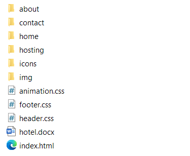

Free Web Hosting with 000webhost
-
Đăng ký
- Sử dụng một trình duyệt Web hiện đại để chạy là tốt nhất, như: Chrome, Firefox, Opera, Edge, Yandex, Brave...
- Truy cập vào địa chỉ sau: https://vn.000webhost.com/dang-ky-website-mien-phi
- Nhập thông tin vào form và nhấn ĐĂNG KÝ
- Một E-mail xác thực sẽ được gửi cho bạn. Hãy kiểm tra E-mail và nhấn nút Click To Verify Email.
- Cuối cùng, nhấn GET STARTED để hoàn tất, tiến hành tạo Website thôi lào. -
Tạo WebSite
- Sau khi nhấn GET STARTED như ảnh trên, bạn cần thiết lập một số bước tiếp theo để tạo WebSite đầu tiên.
- Tiếp theo, mở thư mục public_html và nhấn nút Upload để tiến hành tải lên mọi file trong bài web của chúng ta.
- Cửa sổ Upload files mở ra, nhấn SELECT FILES đế tiến hành chọn các file trong máy tính. Có thể chọn nhiều file một lúc. Nhưng không thể chọn một thư mục - Buộc phải tạo một thư mục trên này rồi mới tải các file tương ứng lên được.
- Cửa sổ xác nhận các file sẽ được tải lên, có thể thêm bớt. Nhấn Upload để bắt đầu tải file lên.
- Kết quả sau khi Upload xong.
- Ta còn thiếu rất nhiều thư mục, nhấn nút New Folder để tạo trực tiếp trên này.
- Cửa sổ tạo thư mục hiện ra, nhập tên cho thư mục tương ứng trên máy tính cần tải lên và nhấn CREATE
- Tạo xong, ta mở thư mục đó ra (vẫn đang trên public_html) và tiến hành Upload
- Tiếp tục tạo thêm thư mục nếu bạn có nhu cầu. Cuối cùng thì ta sẽ được kết quả như sau:  -
Chạy WebSite trong 1 nốt nhạc
- Website bắt buộc phải có 1 file index.html trong thư mục public_html.
- Mỗi sự thay đổi đều được cập nhật ngay lập tức.
- Truy cập WebSite của bạn bằng cách: https://tên_website_của_bạn.000webhostapp.com
- Ví dụ: https://bvu-website-1.000webhostapp.com
- Lấy tên WebSite tại đây:
-
Bonus - Cách xoá WaterMark của trang khi xuất bản
- Thêm đoạn mã sau vào trong thẻ <head></head> của file index.html:
<style> img[alt='www.000webhost.com'] { display: none; } </style>
- Nháy đúp vào index.html để sửa code, sau đó nhấn SAVE để lưu: